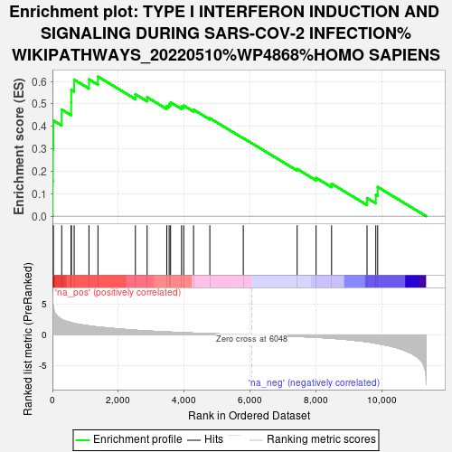
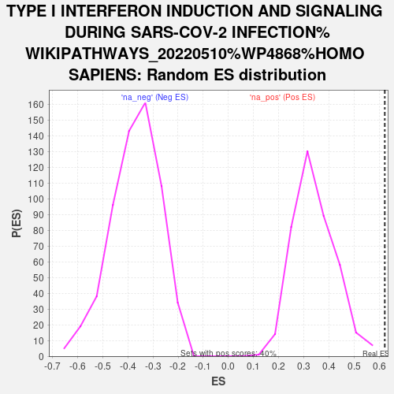

| | | Dataset | deg_con |
| Phenotype | NoPhenotypeAvailable |
| Upregulated in class | na_pos |
| GeneSet | TYPE I INTERFERON INDUCTION AND SIGNALING DURING SARS-COV-2 INFECTION%WIKIPATHWAYS_20220510%WP4868%HOMO SAPIENS |
| Enrichment Score (ES) | 0.6212329 |
| Normalized Enrichment Score (NES) | 1.815784 |
| Nominal p-value | 0.0 |
| FDR q-value | 0.22267559 |
| FWER p-Value | 0.937 |
Table: GSEA Results Summary

Fig 1: Enrichment plot: TYPE I INTERFERON INDUCTION AND SIGNALING DURING SARS-COV-2 INFECTION%WIKIPATHWAYS_20220510%WP4868%HOMO SAPIENS
Profile of the Running ES Score & Positions of GeneSet Members on the Rank Ordered List
| SYMBOL | RANK IN GENE LIST | RANK METRIC SCORE | RUNNING ES | CORE ENRICHMENT | | 1 | STAT2 | 8 | 5.536 | 0.1565 | Yes |
| 2 | IRF9 | 14 | 5.027 | 0.2989 | Yes |
| 3 | MAVS | 29 | 4.510 | 0.4257 | Yes |
| 4 | IRAK4 | 281 | 2.500 | 0.4745 | Yes |
| 5 | IKBKE | 569 | 1.999 | 0.5059 | Yes |
| 6 | TYK2 | 572 | 1.994 | 0.5624 | Yes |
| 7 | IRF3 | 660 | 1.860 | 0.6075 | Yes |
| 8 | EIF2AK2 | 1108 | 1.447 | 0.6091 | Yes |
| 9 | MYD88 | 1381 | 1.273 | 0.6212 | Yes |
| 10 | IFNAR1 | 2518 | 0.765 | 0.5426 | No |
| 11 | OAS2 | 2874 | 0.637 | 0.5293 | No |
| 12 | TLR7 | 3470 | 0.482 | 0.4904 | No |
| 13 | IRF7 | 3542 | 0.464 | 0.4973 | No |
| 14 | STAT1 | 3586 | 0.455 | 0.5064 | No |
| 15 | OAS1 | 3919 | 0.372 | 0.4876 | No |
| 16 | TLR9 | 3984 | 0.356 | 0.4921 | No |
| 17 | IFNAR2 | 4283 | 0.290 | 0.4740 | No |
| 18 | TLR4 | 4777 | 0.195 | 0.4360 | No |
| 19 | OAS3 | 5792 | 0.032 | 0.3473 | No |
| 20 | TRAF3 | 7427 | -0.246 | 0.2099 | No |
| 21 | TRAF6 | 8002 | -0.395 | 0.1704 | No |
| 22 | IFIH1 | 8472 | -0.542 | 0.1443 | No |
| 23 | TLR3 | 9548 | -1.101 | 0.0806 | No |
| 24 | JAK1 | 9814 | -1.345 | 0.0953 | No |
| 25 | TBK1 | 9871 | -1.388 | 0.1298 | No |
Table: GSEA details [plain text format]

Fig 2: TYPE I INTERFERON INDUCTION AND SIGNALING DURING SARS-COV-2 INFECTION%WIKIPATHWAYS_20220510%WP4868%HOMO SAPIENS: Random ES distribution
Gene set null distribution of ES for TYPE I INTERFERON INDUCTION AND SIGNALING DURING SARS-COV-2 INFECTION%WIKIPATHWAYS_20220510%WP4868%HOMO SAPIENS